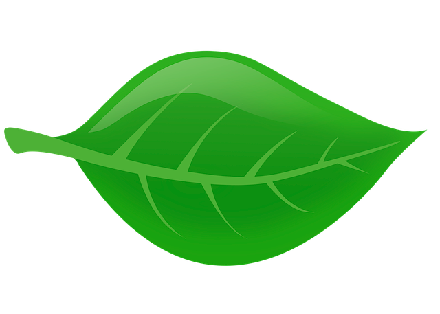

Présentation
Plus d'informations sur : Les Plantes | Les Fleurs | Les Arbustes | Les Légumes
Plantes
Définition :
Les plantes (Plantae) sont des organismes photosynthétiques et autotrophes, caractérisés par des cellules végétales. Elles forment l'un des règnes des eucaryotes. Ce règne est un groupe monophylétique comprenant les plantes terrestres, les algues vertes, les algues rouges et les glaucophytes.
Fleurs
Définition :
En biologie, chez toutes sortes de plantes à fleurs (angiospermes), la fleur constitue l'organe de la reproduction sexuée et l'ensemble des « enveloppes » qui l'entourent. Après la pollinisation, la fleur est fécondée et se transforme en fruit contenant les graines. Les fleurs peuvent être solitaires, mais elles sont le plus souvent regroupées en inflorescences.
Arbustes
Définition :
En botanique, l’arbuste se distingue de l'arbre ou de l'arbrisseau. Il désigne une plante ligneuse d'une taille entre 4 et 7 mètres à l'état adulte, à la différence de l'arbre qui fait plus de 7 mètres à l'état adulte.
Légumes
Définition :
Un légume est la plante ou une partie comestible d'une espèce potagère.